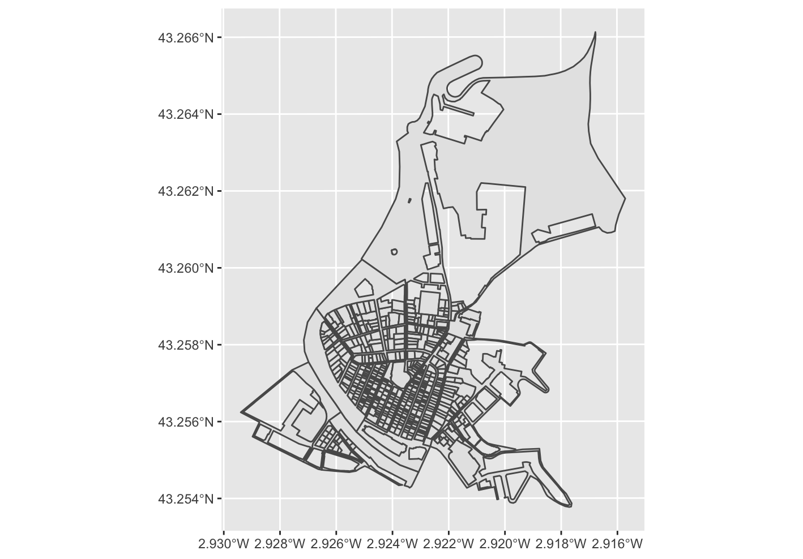
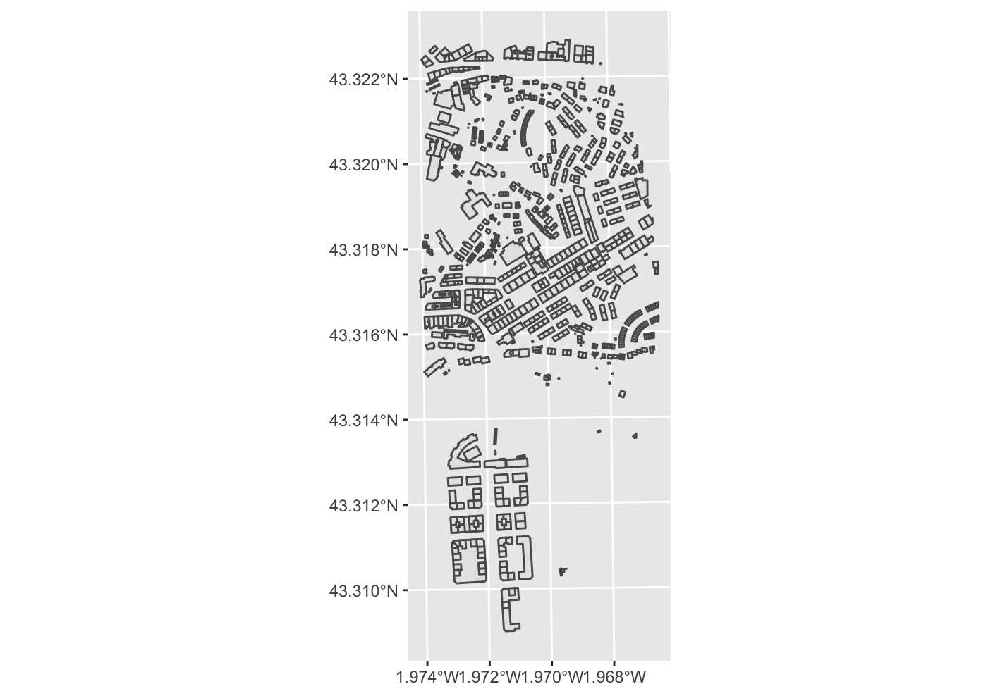
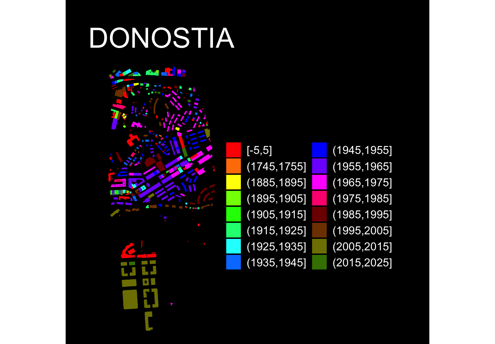

CatastRoEus is a package that provide access to different INSPIRE API services of the Cadastre of Pais Vasco (https://geo.araba.eus/es/servicios-web)(https://b5m.gipuzkoa.eus/web5000/en/inspire-services). With CatastRoEus it is possible to download spatial objects as buildings, addresses or cadastral parcels.
The INSPIRE Directive aims to create a European Union spatial data infrastructure for the purposes of EU environmental policies and policies or activities which may have an impact on the environment. This European Spatial Data Infrastructure will enable the sharing of environmental spatial information among public sector organisations, facilitate public access to spatial information across Europe and assist in policy-making across boundaries.
The implementation of the INSPIRE directive on the Cadastre of the Basque Country allows recover spatial objects from the cadastre databases of the three provinces (Bizkaia, Gipuzkua and Alava):
sf objects (see
?sf::st_sf).On this example we would retrieve the cadastral parcels of Bilbao:
library(CatastRoEus)
# For getting coords
library(sf)
library(mapSpain)
# Data wrangling and visualization
library(dplyr)
library(ggplot2)
bilbao <- esp_get_capimun(munic = "Bilbao") %>%
st_transform(4326) %>%
# Small buffer of 200 m
st_buffer(200)
cp_bilbao <- catreus_wfs_get_parcels_bbox(bilbao)
ggplot(cp_bilbao) +
geom_sf()Example: Bilbao
We can create also thematic maps using the information available on the spatial objects. We would produce a visualization of the urban growth of Donostia using CatastRoEus, replicating the map produced by Dominic Royé on his post Visualize urban growth.
In first place, we extract the coordinates of the city center of Donostia using mapSpain:
# Use mapSpain for getting the coords
donostia <- esp_get_capimun(munic = "^Donostia")
# Transform to ETRS89 / UTM 30 N and add a buffer of 750m
donostia_buff <- donostia %>%
st_transform(4326) %>%
st_buffer(1250)Next step consists on extracting the buildings using the WFS service:
donostia_bu <- catreus_wfs_get_buildings_bbox(donostia_buff, count = 1000)Next step for creating the visualization is to crop the buildings to the buffer we created before:
if (st_crs(donostia_bu) != st_crs(donostia_buff)) {
donostia_buff <- st_transform(donostia_buff, st_crs(donostia_bu))
}
dataviz <- st_intersection(donostia_bu, donostia_buff)
ggplot(dataviz) +
geom_sf()Buildings Map
Let’s extract now the finishing construction year, available in the
column end:
# Extract 4 initial positions
year <- substr(dataviz$end, 1, 4)
# Replace all that doesn't look as a number with 0000
year[!(year %in% 0:2500)] <- "0000"
# To numeric
year <- as.integer(year)
# New column
dataviz <- dataviz %>%
mutate(year = year)Last step is to create groups based on the year and create the data
visualization. We use here the function
ggplot2::cut_width() to create different classes:
dataviz <- dataviz %>%
mutate(year_cat = ggplot2::cut_width(year, width = 10, dig.lab = 12))
#Personalise palette color
dataviz_pal <- c(
"#FF0000", "#FF7F00", "#FFFF00", "#7FFF00", "#00FF00",
"#00FF7F", "#00FFFF", "#007FFF", "#0000FF", "#7F00FF",
"#FF00FF", "#FF007F", "#7F0000", "#7F3F00", "#7F7F00",
"#3F7F00", "#007F00", "#007F3F", "#007F7F", "#003F7F",
"#00007F", "#3F007F", "#7F007F", "#7F003F", "#4B0082",
"#9400D3", "#8B4513", "#D2691E", "#FF4500"
)
ggplot(dataviz) +
geom_sf(aes(fill = year_cat), color = NA) +
scale_fill_manual(values = dataviz_pal, guide = guide_legend(ncol = 2)) +
theme_void() +
labs(title = "DONOSTIA", fill = "") +
theme(
panel.background = element_rect(fill = "black"),
plot.background = element_rect(fill = "black"),
legend.justification = .5,
legend.text = element_text(
colour = "white",
size = 12
),
plot.title = element_text(
colour = "white", hjust = .5,
margin = margin(t = 30),
size = 30
),
plot.caption = element_text(
colour = "white",
margin = margin(b = 20), hjust = .5
),
plot.margin = margin(r = 40, l = 40)
)Donostia: Urban Growth